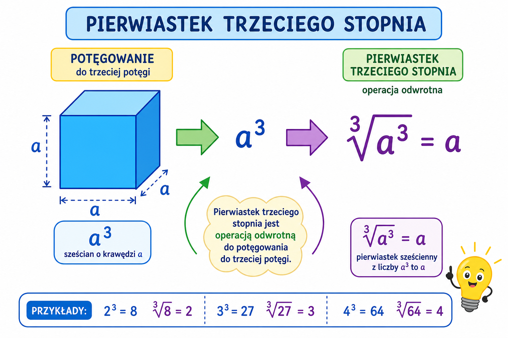

Co to jest? Що це?
Pierwiastek sześcienny z a to liczba, która podniesiona do 3. potęgi daje a.
Кубічний корінь з a — число, яке в 3-му степені дає a.
Jak w szkole? Як у школі?
∛8=2, bo 2·2·2=8. ∛27=3; ∛64=4; ∛125=5.
∛8=2, бо 2·2·2=8. ∛27=3; ∛64=4; ∛125=5.
Przykład z życia Приклад з життя
Upraszczanie pierwiastków w zadaniu. Przykład: ∛8 = 2.
Спрощення коренів у задачі. Приклад: ∛8 = 2.
∛8 = 2